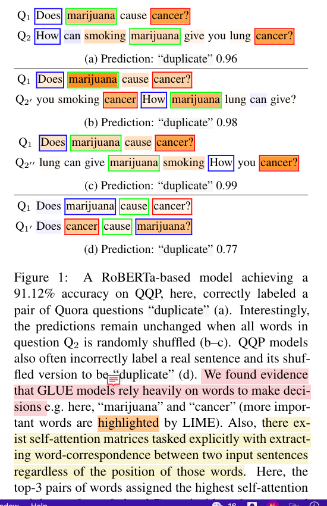
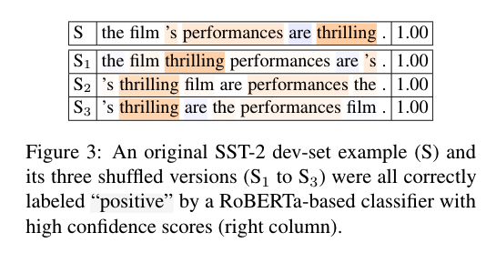
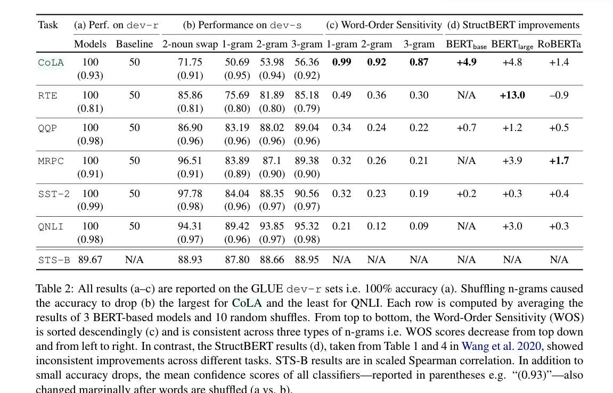
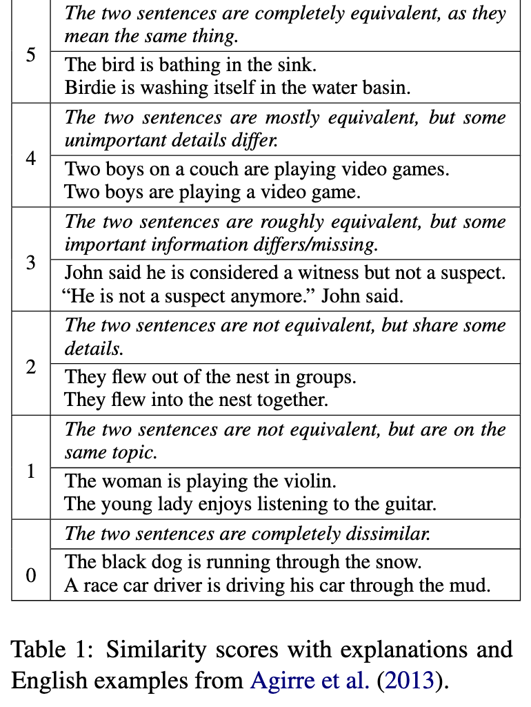
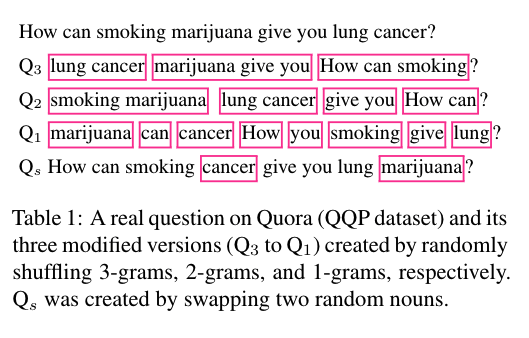

[TOC]
- Title: Out of Order: How Important Is The Sequential Order of Words in a Sentence in Natural Language Understanding Tasks?
- Author: Thang M. Pham
- Publish Year: Jul 2021
- Review Date: Feb 2022
Summary of paper
The author found out that BERT-based models trained on GLUE have low sensitivity to word orders.

The research questions are the following
- Do BERT-based models trained on GLUE care about the order of words in a sentence?
- ANS: NO, except one task named CoLA, which is to detecting grammatically incorrect sentences. Surprisingly, for the rest of the 5 out of 6 binary-classification tasks (i.e. except CoLA), between75% and 90% of the originally correct predictions remain constant after 1-grams are randomly re-ordered
- Are SOTA BERT-based models using word order information when solving NLU tasks? If not, what cues do they rely on?
- ANS: they heavily rely on the word itself rather than the ordering. The results showed that if the top - 1 most important word measured by LIME has a positive meaning, then there is 100% probability that the sentence’s label is “positive”

Results

Some key terms
STS-B (Cer et al.,2017)
a regression task of predicting the semantic similarity of two sentences

Random shuffling methods
the author experimented with three tests: randomly shuffling n-grams where n = {1,2,3}

(Sukai’s opinion: randomly shuffling looks weird, can we shuffle based on the syntax so that the grammar is still correct while the semantic meaning is different?)
LIME
computes a score between [−1,1] for each token in the input denoting how much its presence contributes for or against the network’s predicted label. The importance score per word w is intuitively the mean confidence-score drop over a set of randomly-masked versions of the input when w is masked out.
Potential future work
The vanilla BERT model trained by GLUE is not sensitive to the word ordering and thus may not be very effective in solving the causality in the sentence. Thus it may not be very helpful to directly conduct end to end natural utterance to action sequence mapping for our project.